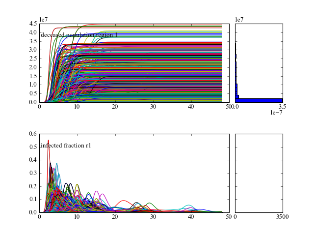
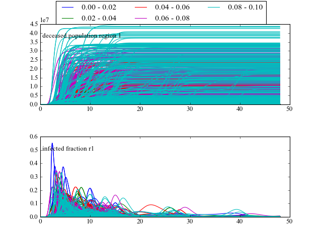
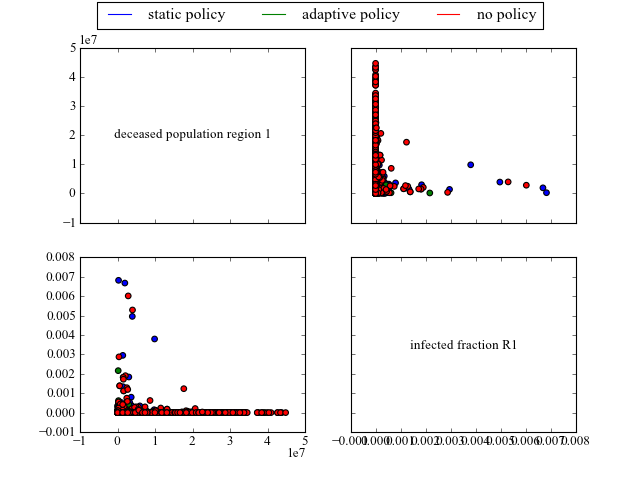

this module provides functions for generating some basic figures. The code can be used as is, or serve as an example for writing your own code. These plots rely on matplotlib, numpy, and scipy.stats.kde
This function takes the results from perform_experiments() and visualizes these as line plots. It is thus to be used in case of time series data. The function will try to find a result labeled “TIME”. If this is present, these values will be used on the X-axis. In case of Vensim models, TIME is present by default.
param results: return from perform_experiments(). param outcomes: list of outcome of interest you want to plot. If empty, all outcomes are plotted. Note: just names. param column: name of the column in the cases array to group results by. param categories: set of categories to be used as a basis for grouping by. Categories is only meaningful if column is provided as well. param ylabels: ylabels is a dictionary with the outcome names as keys, the specified values will be used as labels for the y axis. param density: boolean, if true, the density of the endstates will be plotted. param legend: boolean, if true, and there is a column specified for grouping, show a legend. param discretesize: function to be used to turn a continuous column into intervals in order to use for grouping by. rtype: a figure instance Additional key word arguments will be passed along to the density function, if density is True.
property description hist use a histogram instead of a GKDE log log the resulting histogram or GKDE an example of use
>>> import expWorkbench.util as util >>> data = util.load_results(r'1000 flu cases.cPickle') >>> lines(data, density=True, hist=True)will show lines for all the outcomes of interest, and also shows histograms for the endstate densities.
[source code, hires.png, pdf]
while
>>> lines(data, column='fatality ratio region 1', density=False)will group the result by the ‘fatality ratio region 1’, this uncertainty is grouped into five intervals generated by the default discretesize function.
[source code, hires.png, pdf]
the legend at the top shows the intervals used. Through the categorize keyword argument, or through providing a different discretesize function, alternative intervals can be specified.
Note
the current implementation is limited to seven different categories in case of column, categories, and/or discretesize. This limit is due to the colors specified in COLOR_LIST.
Make envelop plots. An envelope shows over time the minimum and maximum value for a set of runs over time. It is thus to be used in case of time series data. The function will try to find a result labeled “TIME”. If this is present, these values will be used on the X-axis. In case of Vensim models, TIME is present by default.
| Parameters: |
|
|---|---|
| Return type: | a figure instance |
Additional key word arguments will be passed along to the density function, if density is True.
| property | description |
|---|---|
| hist | use a histogram instead of a GKDE |
| log | log the resulting histogram or GKDE |
an example of use
>>> import expWorkbench.util as util
>>> data = util.load_results(r'1000 flu cases.cPickle')
>>> envelopes(data, column='policy')
will show an envelope for three three different policies, for all the outcomes of interest.
[source code, hires.png, pdf]

while
>>> envelopes(data, column='policy', categories=['static policy', 'adaptive policy'])
will only show results for the two specified policies, ignoring any results associated with ‘no policy’.
[source code, hires.png, pdf]

Note
the current implementation is limited to seven different categories in case of column, categories, and/or discretesize. This limit is due to the colors specified in COLOR_LIST.
Generate a R style pairs scatter multiplot. In case of time-series data, the end states are used.
param input: return from perform_experiments. param outcomes: list of outcome of interest you want to plot. If empty, all outcomes are plotted note: just names. param column: name of the column in the cases array to group results by param categories: set of categories to be used as a basis for grouping by. Categories is only meaningful if column is provided as well. param ylabels: ylabels is a dictionary with the outcome names as keys, the specified values will be used as labels for the y axis. param legend: boolean, if true, and there is a column specified for grouping, show a legend. param discretesize: function to be used to turn a continuous column into intervals in order to use for grouping by. rtype: a figure instance. an example of use
>>> import expWorkbench.util as util >>> data = util.load_results(r'1000 flu cases.cPickle') >>> multiplot_scatter(data, column='policy', legend=True)generates
[source code, hires.png, pdf]

Note
the current implementation is limited to seven different categories in case of column, categories, and/or discretesize. This limit is due to the colors specified in COLOR_LIST.
Generate a R style pairs lines multiplot. It shows the behavior of two outcomes over time against each other. The origin is denoted with a cicle and the end is denoted with a ‘+’.
| Parameters: |
|
|---|---|
| Return type: | a figure instance. |
an example of use
[source code, hires.png, pdf]

Generate a R style pairs hexbin density multiplot. In case of time-series data, the end states are used.
hexbin makes hexagonal binning plot of x versus y, where x, y are 1-D sequences of the same length, N. If C is None (the default), this is a histogram of the number of occurences of the observations at (x[i],y[i]). For further detail see matplotlib on hexbin
| Parameters: |
|
|---|---|
| Return type: | a figure instance. |
an example of use
[source code, hires.png, pdf]

Helper function responsible for plotting the density part.
| Parameters: |
|
|---|
Helper function for discretesizing a continous array. By default, the array is split into 5 equally wide intervals.
| Parameters: | array – a 1-d array that is to be turned into discrete intervals. |
|---|---|
| Returns: | list of tuples with the lower and upper bound of the intervals. |
{kind=link}
{kind=link}
{kind=link}
{kind=link}
{kind=link}
{kind=link}
{kind=link}